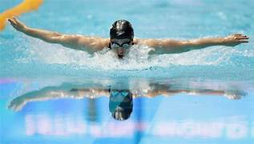

Natação Olimpíadas
Históriada Natação
A natação é disputada nas Olimpíadas desde a primeira edição da era moderna, em 1896,
em Atenas.
Inicialmente, foram disputadas quatro provas. Além dos 100 metros livres,
houve a competição de 500 metros livres, 1.200 metros livres e 100 metros livres para
marinheiros. Todas as últimas três provas estiveram apenas na primeira edição dos Jogos
Olímpicos.
No início da história da natação olímpica, nadava-se em mar aberto, lagos ou rios.
A piscina foi introduzida apenas nos Jogos de Londres, em 1908. Até aquela edição,
as disputas eram apenas entre os homens.
As mulheres passaram a participar da natação nas Olimpíadas em 1912, em Estocolmo,
com os 100 metros livres e o revezamento 4 x 100 metros livres.
Ao longo da história dos Jogos, houve muitas mudanças no programa olímpico da
natação. A Olimpíada de Tóquio, em 2020, marcou a estreia das provas mistas,
com a disputa do revezamento 4×100 metros medley misto.
Confira, a seguir, quais são as provas de natação disputadas atualmente nos
Jogos Olímpicos!
